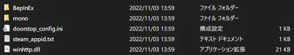
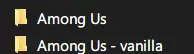
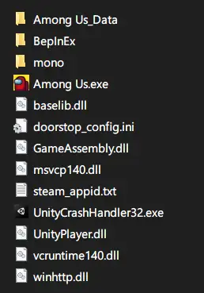
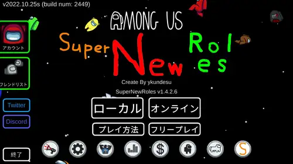

リリースページをスクロールして、Assets と書いてある所から
「zip」 という文字があるファイルをダウンロードします。
村の全員で同じバージョンをダウンロードしてください。
※ブラウザによっては、警告がでて、ダウンロードできない場合があります。
その場合は破棄ではなく、警告メッセージ右横の「▼」をクリックし、
「継続」を選択して、ダウンロードしてください。
Windows PC（Steam / Epic games）にてインストールする事ができます。

ライブラリ → Among Us を右クリック → 管理 > ローカルファイルを観覧
上のアドレスバーから common をクリックして上位の階層に移動した後、
Among Us フォルダをコピーアンドペーストして、
「Among Us - コピー」 フォルダを作成しておきます。
※コピーしたフォルダがバニラ（デフォルト）になります。
MODなし Among Us をプレイする場合、
MODあり Among Us フォルダを「Among Us_mod」など分かりやすい名前に変更した後、
バニラのフォルダ名を「Among Us - コピー」から「Among Us」に戻してください。
※基本的に Steam から起動されるのは、
「Among Us」 というフォルダの中に入っているゲームになります。
「Among Us_mod」 という名前のフォルダに MOD を入れていても、
Steam から起動されるのは 「Among Us」 というフォルダの中身である為、
「Among Us_mod」の中に入っているゲームは、Steam から実行されません。
必ずフォルダ名を確認して、プレイしたいゲームのフォルダ名を、
「Among Us」 という名前に変更してください。

上の様にフォルダをコピーして、mod用とバニラ用の2つを用意すると、
ファイルの入れ替えの必要が無くなる為、楽になります。
入れ替えの際は、使用するフォルダの名前を 「Among Us」 に変更して下さい。

上記のファイル群になっている事を確認してください。
コピーをミスして抜けているファイルはなければ、次へ進んでください
※Among Usのショートカットや、Among Us.exeから起動するのでは無く、
SteamライブラリのAmong Usから起動する様にして下さい。
ログインがうまく行われない可能性があります。
最初の起動には時間がかかる場合があります。

起動画面が上の画像のように変化していたら、インストール成功です。
ライブラリからインストールを選択した時に、インストール先フォルダが表示されます。
Steam とは異なり、Epic Games Launcher からフォルダは開けない為、
自分のパソコンのエクスプローラーから、該当のインストール先フォルダを開いてください。
上のアドレスバーから common をクリックして上位の階層に移動した後、
AmongUs フォルダを 【右クリック → コピー】 して、
そのまま何もないところで 【右クリック → 貼り付け】 して、
「AmongUs - コピー」 フォルダを作成しておきます。
※コピーしたフォルダがバニラ（デフォルト）になります。
MODなし Among Us をプレイする場合、
MODあり Among Us フォルダを「AmongUs_mod」など分かりやすい名前に変更した後、
バニラのフォルダ名を「AmongUs - コピー」から「AmongUs」に戻してください。
※基本的に Epic から起動されるのは、
「AmongUs」 というフォルダの中に入っているゲームになります。
「AmongUs_mod」 という名前のフォルダに MOD を入れていても、
Steam から起動されるのは 「AmongUs」 というフォルダの中身である為、
「AmongUs_mod」の中に入っているゲームは、Steam から実行されません。
必ずフォルダ名を確認して、プレイしたいゲームのフォルダ名を、
「AmongUs」 という名前に変更してください。
上の様にフォルダをコピーして、mod用とバニラ用の2つを用意すると、
ファイルの入れ替えの必要が無くなる為、楽になります。
入れ替えの際は、使用するフォルダの名前を 「Among Us」 に変更して下さい。
上記のファイル群になっている事を確認してください。
※Among Usのショートカットや、Among Us.exeから起動するのでは無く、
Epic Games LauncherのAmong Usから起動する様にして下さい。
ログイン処理がうまく行われない可能性があります。
最初の起動には時間がかかる場合があります。
起動画面が上の画像のように変化していたら、インストール成功です。